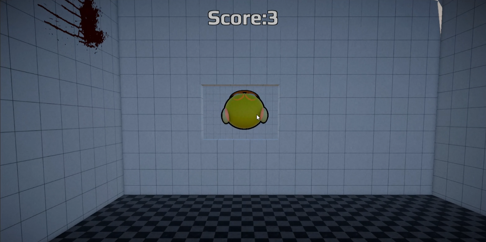
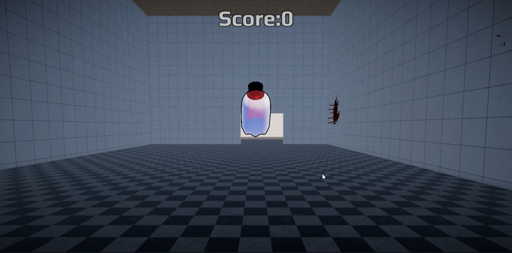
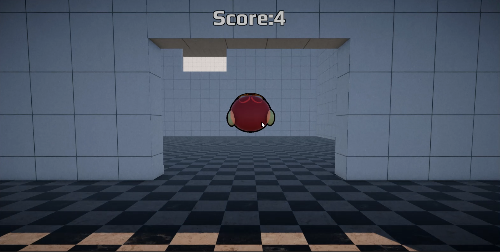

Description:
Play as Flap Flap, that was send to an mental institution and has to escape to finally be free from this establishment.



This Game was created as an assignment for the Hogeschool van Amsterdam to test what our levels are with Unity. Which resulted in this project manifestation of my current skill set
Note, Some things in the normal build version and webGL version might differ, since some things aren't supported in the webGL version what might be actually work in the normal build version. So if you would like to have the full experience, I would recommend on getting the build version.